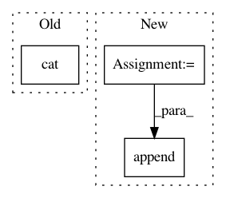

0389fda574d618ec22b488208a1d597a18d7ce72,examples/next-frame.py,NextFrameGAN,forward_pass,#NextFrameGAN#,195
Before Change
if config.discriminator3d:
grems = grems[1:] + [rg[:,:,None,:,:]]
rc = rc[:,:,None,:,:]
d_fakes.append(D(torch.cat(grems, dim=2), context={"c":rc}))
else:
grems = grems[1:] + [rg]
d_fakes.append(D(torch.cat(grems, dim=1), context={"c":rc}))
After Change
d_fake = D(d_fake_input, context={"c": c})
d_fakes.append(d_fake)
_d_loss, _g_loss = loss.forward(d_real, d_fake)
d_losses.append(_d_loss)
g_losses.append(_g_loss)
if len(rgs) > 0:
grems = rgs[:len(rems)]
In pattern: SUPERPATTERN
Frequency: 3
Non-data size: 3
Instances
Project Name: HyperGAN/HyperGAN
Commit Name: 0389fda574d618ec22b488208a1d597a18d7ce72
Time: 2020-12-24
Author: martyn@255bits.com
File Name: examples/next-frame.py
Class Name: NextFrameGAN
Method Name: forward_pass
Project Name: kymatio/kymatio
Commit Name: 9991d432372b304f84b67cc60027e92f4ce2273a
Time: 2018-12-16
Author: eickenberg@users.noreply.github.com
File Name: kymatio/scattering3d/scattering3d.py
Class Name: Scattering3D
Method Name: forward
Project Name: 1adrianb/face-alignment
Commit Name: 47fa9165313efd36310de98fec8b25be08016db2
Time: 2020-07-20
Author: imad.toubal@gmail.com
File Name: face_alignment/api.py
Class Name: FaceAlignment
Method Name: get_landmarks_from_batch